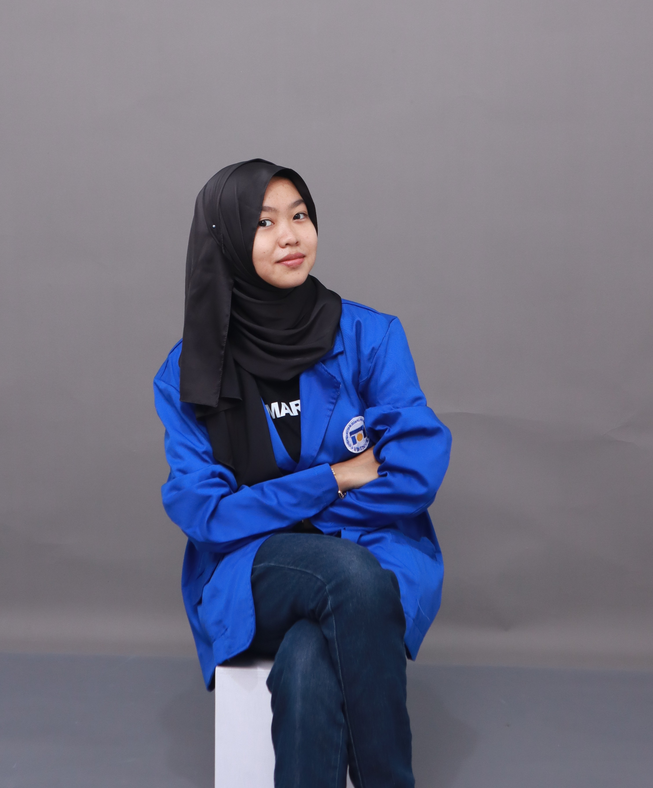

|  |
Inas SalwaMahasiswa Sistem InformasiHalo, saya Inas Salwa Nuraini, seorang mahasiswa berusia 19 tahun yang sedang menempuh pendidikan S1 Sistem Informasi tahun ke dua di Universitas Dian Nuswantoro. Saya berasal dari Semarang, Jawa Tengah, dan memiliki minat besar dalam bidang teknologi informasi. |
|
Nama : Inas Salwa Nuraini Umur : 19 No. Hp: +6282328665788 Alamat: Semarang, Central Java instagram: @inassalwaa Pendidikan : Dian Nuswantoro University |
Riwayat Pendidikan
| Jenjang | Nama Institusi | Tahun |
|---|---|---|
| SD | SD Negeri 7 Mulyoharjo | 2012 - 2018 |
| SMP | SMP Negeri 2 Pemalang | 2018 - 2021 |
| SMA | SMA Negeri 2 Pemalang | 2021 - 2024 |
| S1 Sistem Informasi | Universitas Dian Nuswantoro | 2024 - Sekarang |
Minat
- UI/UX Design
- Technoperneurship
- Photography
Pengalaman Organisasi
- Wakil Ketua - Majelis Perwakilan Kelas (2022 - 2023)
- Anggota Aktif - Dinus Open Source Community (2024 - 2025)
- Sekretaris Umum II - Dinus Open Source Community (2025 - 2026)